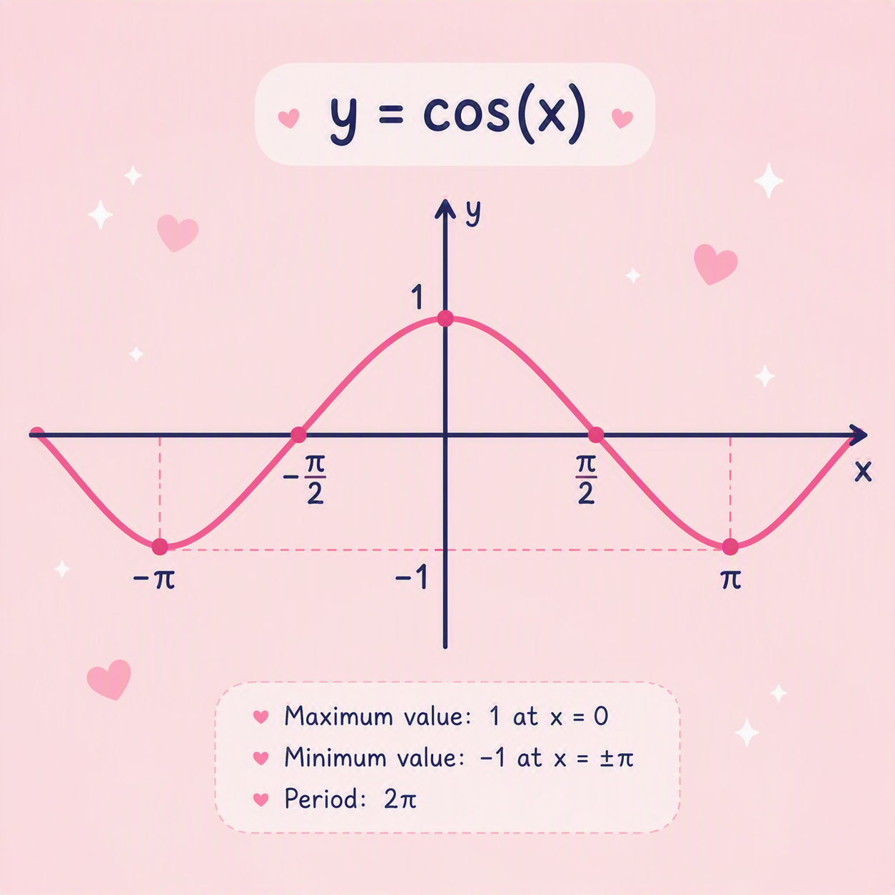
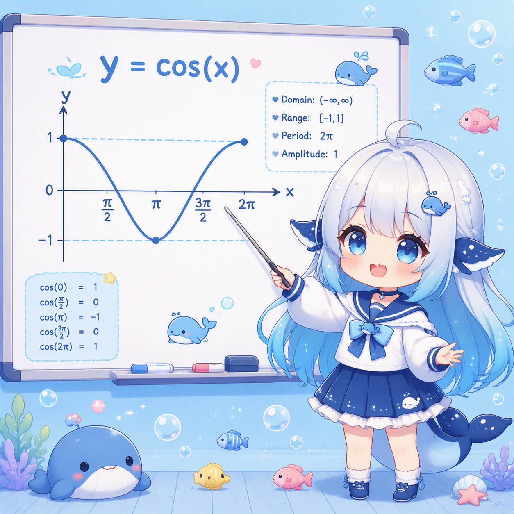
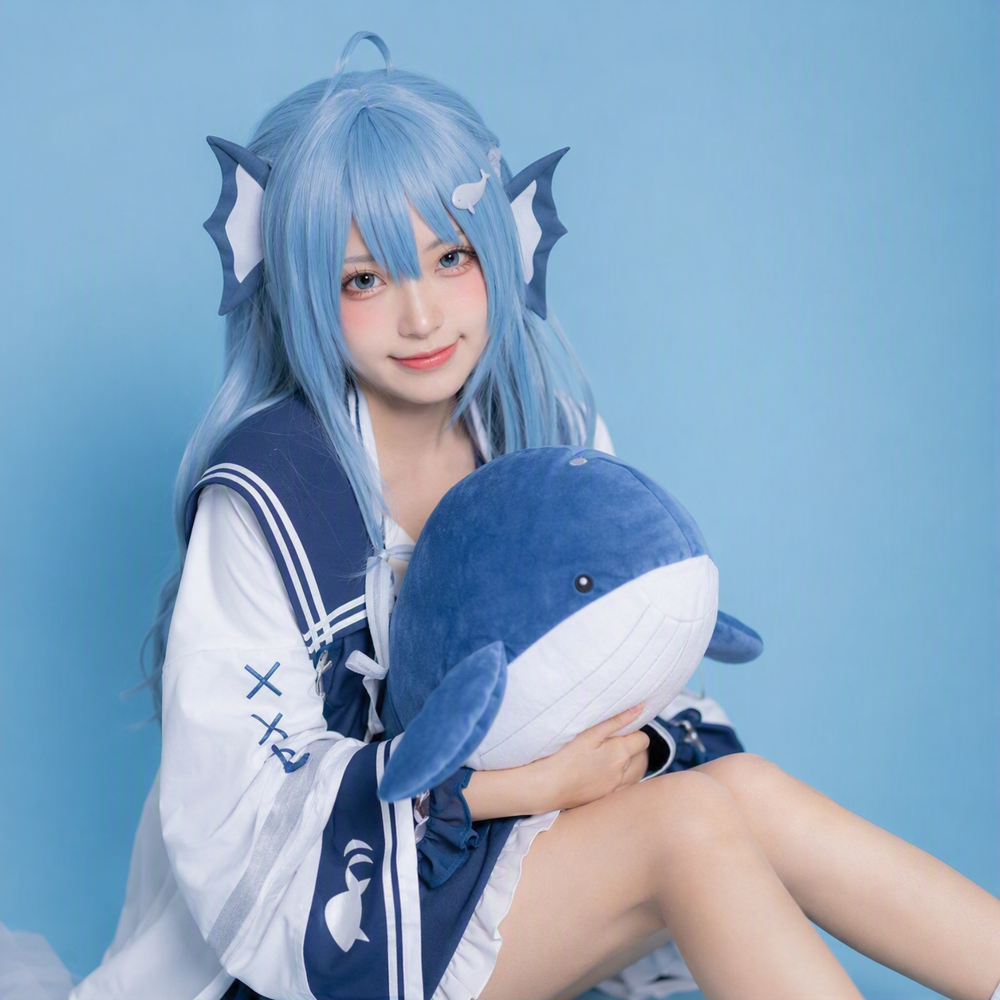
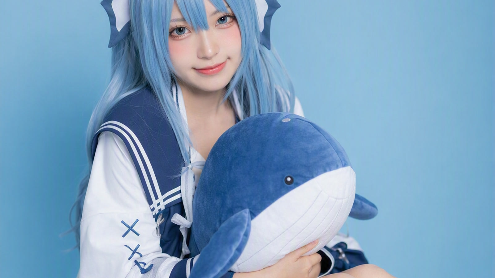
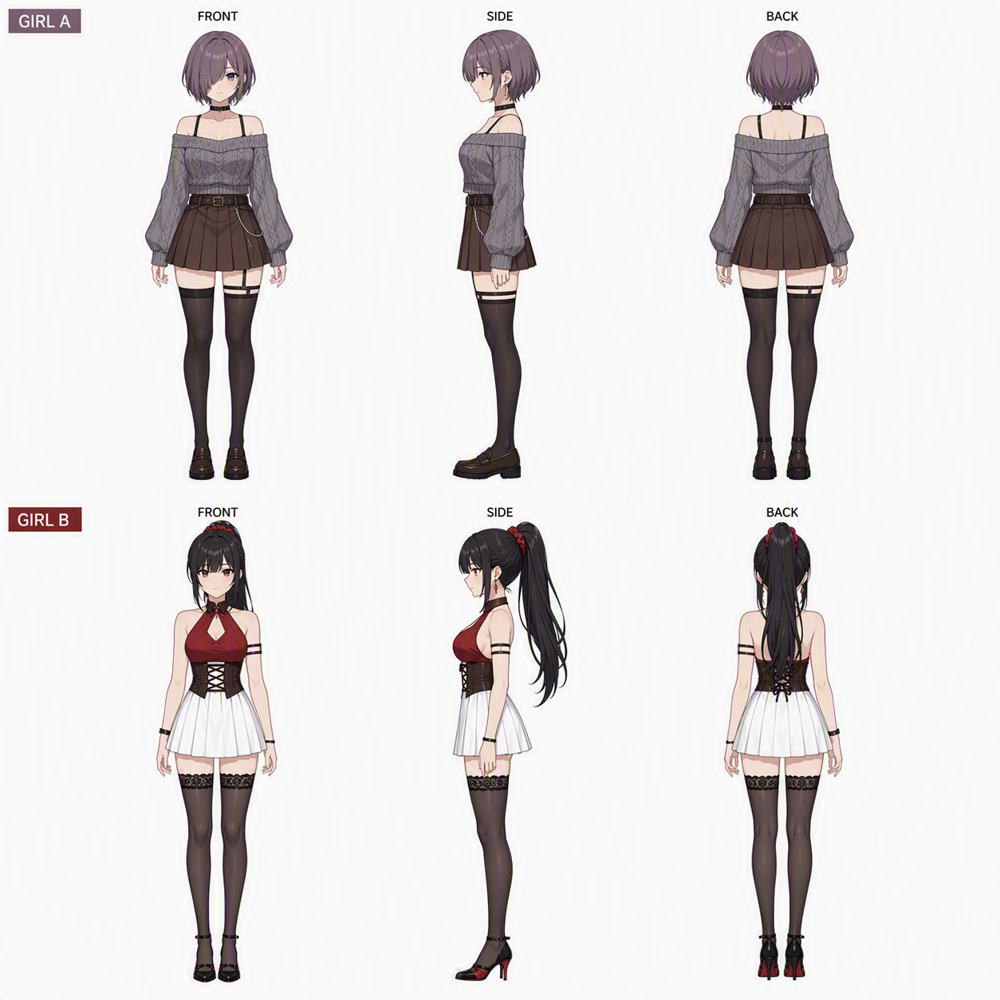
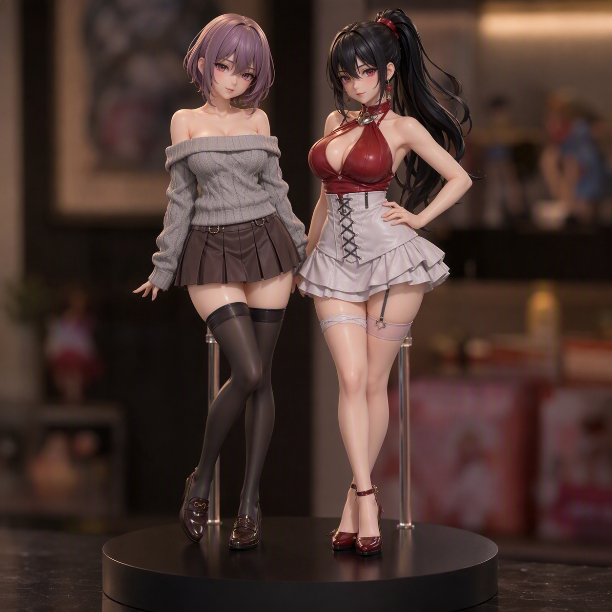
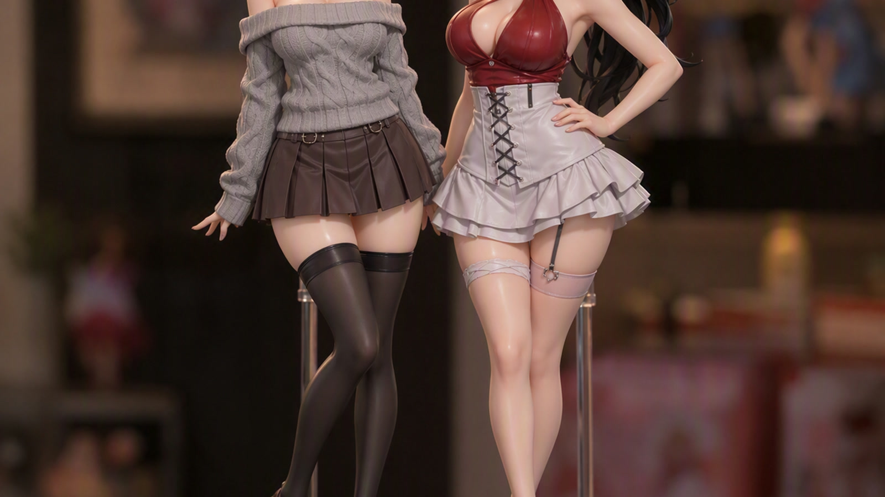

第一张：cos 曲线
用来验证接口能不能出图的测试图，粉色系。
a clean cosine curve graph, pastel pink
从一张数学函数图开始，一路试到真人 cosplay 照片、三视图建模参考、PVC 手办产品图。 全程走本地接口，没有联网调云端账号。
先确认接口通不通

用来验证接口能不能出图的测试图，粉色系。
同一个画法，三种风格差很多

不说"写实"就默认给你这种动画风。

加了摄影参数词之后，直接出照片质感。

1600×900，能直接丢进博客当文章封面。
三视图和手办，出图成功率最高

正面 / 侧面 / 背面，比例统一，能直接拿去建模。

塑料反光、底座、支架都有，像真手办棚拍。

同一张图裁成 16:9 的样子。